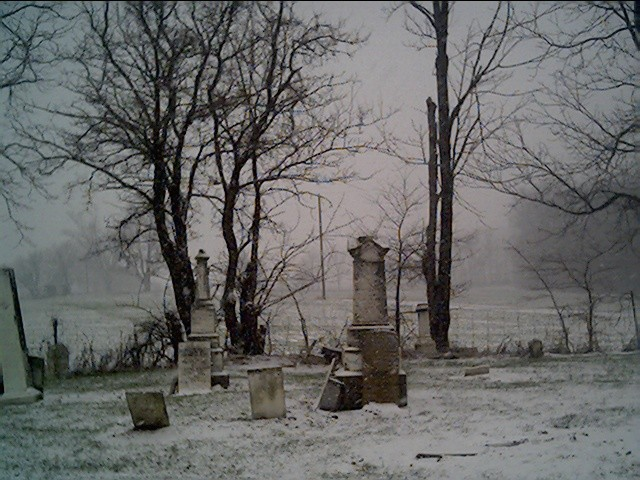

Gilboa Cemetery

The Gilboa Cemetery is said to be haunted the ghosts of children who died in a 1952 cholera epidemic. Their bodies are buried here. Supposedly, exhumations have discovered several empty graves. At night you can hear children's voices--sometimes playing, sometimes crying.
Click here to see Ohio Paranormal Investigator's page on the Gilboa Cemetery.
Back